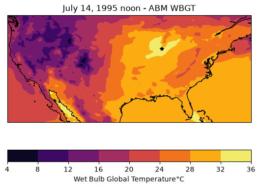
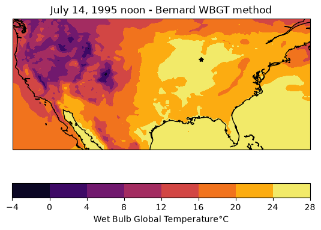
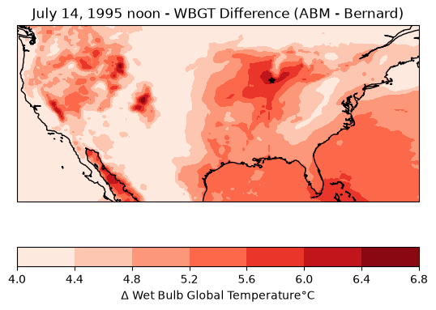

Humid Heat Metrics#
Overview#
Humid heat metrics index temperature and humidity, which is often more useful than comparing either variable alone when considering perceived temperature, as they together affect the human body’s ability to cool itself down. Humid heat metrics are especially important for the safety of outside workers, the elderly, or otherwise high-risk, high-exposure individuals[1].
Wet Bulb Globe Temperature (\(WBGT\)) is a measure of heat stress. The equations for outdoor (\(WBGT_{od}\)) and indoor/shaded (\(WBGT_{id}\)) WBGTs are[1]:
\(WBGT_{od} = 0.7*T_{nwb} + 0.2*T_g + 0.1*T_a\)
\(WBGT_{id} = 0.7*T_{nwb} + 0.3*T_g\)
where \(T_a\) refers to Dry Bulb Ambient Temperatue, \(T_{nwb}\) is the Natural Wet Bulb Temperature with exposure to wind and sun, and \(T_g\) is the Globe Temperature taken from inside a copper globe painted black and exposed to the sun[1].
However, this formula is complicated by the reality that Natural Wet Bulb Temperature and Globe Temperature are not always readily available variables from weather stations or atmospheric models.
In this notebook, we will demonstrate the Australian Bureau of Meteorology (ABM) and Bernard methods of predicting wet bulb global temperature with a focus on the July 1995 Chicago heatwave.
For our analysis, we have ERA5 reanalysis data for the lower contiguous United States (50°N, 24°S, -66°E, -125°W) from July 1995 with the variables: 2-meter temperature, 2-meter dew point temperature, surface pressure, and u/v wind components.
ERA5 is a reanalysis, a global weather/climate dataset that combines model output and observations with physical understanding to create a spatially and temporally consistent historic dataset, spanning from 1940 to today (updated every 5 days)[2].
import geocat.datafiles as gcd
import xarray as xr
import numpy as np
import matplotlib.pyplot as plt
import cartopy.crs as ccrs
from scipy import optimize
Downloading file 'registry.txt' from 'https://github.com/NCAR/geocat-datafiles/raw/main/registry.txt' to '/home/runner/.cache/geocat'.
era5 = xr.open_dataset(gcd.get("netcdf_files/era5_1995-07-14T12.nc"))
era5.u10
Downloading file 'netcdf_files/era5_1995-07-14T12.nc' from 'https://github.com/NCAR/geocat-datafiles/raw/main/netcdf_files/era5_1995-07-14T12.nc' to '/home/runner/.cache/geocat'.
<xarray.DataArray 'u10' (latitude: 105, longitude: 237)> Size: 199kB
[24885 values with dtype=float64]
Coordinates:
* latitude (latitude) float32 420B 50.0 49.75 49.5 49.25 ... 24.5 24.25 24.0
* longitude (longitude) float32 948B -125.0 -124.8 -124.5 ... -66.25 -66.0
time datetime64[ns] 8B ...
Attributes:
units: m s**-1
long_name: 10 metre U wind component# Convert from Kelvin to Celsius
era5['t2m_C'] = era5['t2m'] - 273.15
era5['d2m_C'] = era5['d2m'] - 273.15
# Chicago coordinates
lat_chicago = 41.8781
lon_chicago = -87.6298
Australian Bureau of Meteorology (ABM)#
The Australian Bureau of Meteorology’s method of estimating Wet Bulb Global Temperature is attractive due to its simplicity. It only requires temperature and relative humidity[3].
Below is a chart of WBGT from relative humidity and temperature[3]:

This method tends to overpredict WBGT compared to other models and assumes full sunlight and light breeze.
def calc_abm_wbgt(t_a, rh):
p = (
(rh / 100) * 6.105 * np.exp(17.27 * t_a / (237.7 + t_a))
) # water vapor pressure [hPa]
wbgt = (0.567 * t_a) + (0.393 * p) + 3.94
return wbgt
To use our ERA5 data in this equation, we need to first calculate relative humidity (the ratio of vapor pressure to saturation pressure) from temperature and dewpoint. To do this we use the Magnus-Tetens Approximation for vapor pressure[4]:
\(e = 6.11 \exp {\left( \frac{17.625 \times t}{t + 243.04} \right)}\)
where \(e\) is vapor pressure and \(t\) is temperature in Kelvin.
def _calc_vapor_pressure(t): # Magnus-Tetens Approximation
e = 6.11 * np.exp((17.27 * t) / (t + 237.3)) # Vapor Pressure in hPa
return e
def calc_relative_humidity_era5(t_a, t_d):
e = _calc_vapor_pressure(t_d) # vapor pressure from dew point temp
e_sat = _calc_vapor_pressure(t_a) # saturation vapor pressure
rh = 100 * e / e_sat # Clausius-Clapeyron equation
return rh
rh = calc_relative_humidity_era5(era5.t2m_C, era5.d2m_C)
wbgt_abm = calc_abm_wbgt(era5.t2m_C, rh)
wbgt_abm
<xarray.DataArray (latitude: 105, longitude: 237)> Size: 199kB
array([[17.87026107, 16.17965608, 14.57478675, ..., 19.19009504,
18.33482943, 18.17073414],
[18.5690197 , 17.13604585, 17.36420689, ..., 18.53771728,
18.47195479, 18.54166586],
[17.96797569, 18.64702521, 18.87962489, ..., 18.72776049,
18.70938808, 18.84343994],
...,
[21.67176102, 21.69203306, 21.68911165, ..., 30.19523038,
29.97646297, 29.82487547],
[21.93360605, 21.91177247, 21.90737553, ..., 30.34311432,
30.14710387, 30.0325734 ],
[22.19253977, 22.14410015, 22.12947582, ..., 30.43313854,
30.35434565, 30.2302265 ]], shape=(105, 237))
Coordinates:
* latitude (latitude) float32 420B 50.0 49.75 49.5 49.25 ... 24.5 24.25 24.0
* longitude (longitude) float32 948B -125.0 -124.8 -124.5 ... -66.25 -66.0
time datetime64[ns] 8B 1995-07-14T12:00:00
Attributes:
units: K
long_name: 2 metre temperaturePlotting Chicago ABM WBGT#
fig = plt.figure()
ax = plt.axes(projection=ccrs.PlateCarree())
c = plt.contourf(era5.longitude, era5.latitude, wbgt_abm, cmap='inferno')
ax.coastlines()
cbar = plt.colorbar(c, ax=ax, orientation='horizontal')
cbar.set_label('Wet Bulb Global Temperature' + '\N{DEGREE SIGN}' + 'C')
ax.set_title('July 14, 1995 noon - ABM WBGT')
# Annotate location of Chicago
ax.plot(lon_chicago, lat_chicago, 'k*');
/home/runner/micromamba/envs/geocat-applications/lib/python3.14/site-packages/cartopy/io/__init__.py:242: DownloadWarning: Downloading: https://naturalearth.s3.amazonaws.com/50m_physical/ne_50m_coastline.zip
warnings.warn(f'Downloading: {url}', DownloadWarning)
Error in callback <function _draw_all_if_interactive at 0x7f20c3532fb0> (for post_execute), with arguments args (),kwargs {}:
---------------------------------------------------------------------------
HTTPError Traceback (most recent call last)
File ~/micromamba/envs/geocat-applications/lib/python3.14/site-packages/matplotlib/pyplot.py:300, in _draw_all_if_interactive()
298 def _draw_all_if_interactive() -> None:
299 if matplotlib.is_interactive():
--> 300 draw_all()
File ~/micromamba/envs/geocat-applications/lib/python3.14/site-packages/matplotlib/_pylab_helpers.py:133, in Gcf.draw_all(cls, force)
131 for manager in cls.get_all_fig_managers():
132 if force or manager.canvas.figure.stale:
--> 133 manager.canvas.draw_idle()
File ~/micromamba/envs/geocat-applications/lib/python3.14/site-packages/matplotlib/backend_bases.py:1989, in FigureCanvasBase.draw_idle(self, *args, **kwargs)
1987 if not self._is_idle_drawing:
1988 with self._idle_draw_cntx():
-> 1989 self.draw(*args, **kwargs)
File ~/micromamba/envs/geocat-applications/lib/python3.14/site-packages/matplotlib/backends/backend_agg.py:438, in FigureCanvasAgg.draw(self)
435 # Acquire a lock on the shared font cache.
436 with (self.toolbar._wait_cursor_for_draw_cm() if self.toolbar
437 else nullcontext()):
--> 438 self.figure.draw(self.renderer)
439 # A GUI class may be need to update a window using this draw, so
440 # don't forget to call the superclass.
441 super().draw()
File ~/micromamba/envs/geocat-applications/lib/python3.14/site-packages/matplotlib/artist.py:94, in _finalize_rasterization.<locals>.draw_wrapper(artist, renderer, *args, **kwargs)
92 @wraps(draw)
93 def draw_wrapper(artist, renderer, *args, **kwargs):
---> 94 result = draw(artist, renderer, *args, **kwargs)
95 if renderer._rasterizing:
96 renderer.stop_rasterizing()
File ~/micromamba/envs/geocat-applications/lib/python3.14/site-packages/matplotlib/artist.py:71, in allow_rasterization.<locals>.draw_wrapper(artist, renderer)
68 if artist.get_agg_filter() is not None:
69 renderer.start_filter()
---> 71 return draw(artist, renderer)
72 finally:
73 if artist.get_agg_filter() is not None:
File ~/micromamba/envs/geocat-applications/lib/python3.14/site-packages/matplotlib/figure.py:3282, in Figure.draw(self, renderer)
3279 # ValueError can occur when resizing a window.
3281 self.patch.draw(renderer)
-> 3282 mimage._draw_list_compositing_images(
3283 renderer, self, artists, self.suppressComposite)
3285 renderer.close_group('figure')
3286 finally:
File ~/micromamba/envs/geocat-applications/lib/python3.14/site-packages/matplotlib/image.py:133, in _draw_list_compositing_images(renderer, parent, artists, suppress_composite)
131 if not_composite or not has_images:
132 for a in artists:
--> 133 a.draw(renderer)
134 else:
135 # Composite any adjacent images together
136 image_group = []
File ~/micromamba/envs/geocat-applications/lib/python3.14/site-packages/matplotlib/artist.py:71, in allow_rasterization.<locals>.draw_wrapper(artist, renderer)
68 if artist.get_agg_filter() is not None:
69 renderer.start_filter()
---> 71 return draw(artist, renderer)
72 finally:
73 if artist.get_agg_filter() is not None:
File ~/micromamba/envs/geocat-applications/lib/python3.14/site-packages/cartopy/mpl/geoaxes.py:509, in GeoAxes.draw(self, renderer, **kwargs)
504 self.imshow(img, extent=extent, origin=origin,
505 transform=factory.crs, *factory_args[1:],
506 **factory_kwargs)
507 self._done_img_factory = True
--> 509 return super().draw(renderer=renderer, **kwargs)
File ~/micromamba/envs/geocat-applications/lib/python3.14/site-packages/matplotlib/artist.py:71, in allow_rasterization.<locals>.draw_wrapper(artist, renderer)
68 if artist.get_agg_filter() is not None:
69 renderer.start_filter()
---> 71 return draw(artist, renderer)
72 finally:
73 if artist.get_agg_filter() is not None:
File ~/micromamba/envs/geocat-applications/lib/python3.14/site-packages/matplotlib/axes/_base.py:3367, in _AxesBase.draw(self, renderer)
3364 if artists_rasterized:
3365 _draw_rasterized(self.get_figure(root=True), artists_rasterized, renderer)
-> 3367 mimage._draw_list_compositing_images(
3368 renderer, self, artists, self.get_figure(root=True).suppressComposite)
3370 renderer.close_group('axes')
3371 self.stale = False
File ~/micromamba/envs/geocat-applications/lib/python3.14/site-packages/matplotlib/image.py:133, in _draw_list_compositing_images(renderer, parent, artists, suppress_composite)
131 if not_composite or not has_images:
132 for a in artists:
--> 133 a.draw(renderer)
134 else:
135 # Composite any adjacent images together
136 image_group = []
File ~/micromamba/envs/geocat-applications/lib/python3.14/site-packages/matplotlib/artist.py:71, in allow_rasterization.<locals>.draw_wrapper(artist, renderer)
68 if artist.get_agg_filter() is not None:
69 renderer.start_filter()
---> 71 return draw(artist, renderer)
72 finally:
73 if artist.get_agg_filter() is not None:
File ~/micromamba/envs/geocat-applications/lib/python3.14/site-packages/cartopy/mpl/feature_artist.py:184, in FeatureArtist.draw(self, renderer)
179 geoms = self._feature.geometries()
180 else:
181 # For efficiency on local maps with high resolution features (e.g
182 # from Natural Earth), only create paths for geometries that are
183 # in view.
--> 184 geoms = self._feature.intersecting_geometries(extent)
186 stylised_paths = {}
187 # Make an empty placeholder style dictionary for when styler is not
188 # used. Freeze it so that we can use it as a dict key. We will need
189 # to unfreeze all style dicts with dict(frozen) before passing to mpl.
File ~/micromamba/envs/geocat-applications/lib/python3.14/site-packages/cartopy/feature/__init__.py:312, in NaturalEarthFeature.intersecting_geometries(self, extent)
305 """
306 Returns an iterator of shapely geometries that intersect with
307 the given extent.
308 The extent is assumed to be in the CRS of the feature.
309 If extent is None, the method returns all geometries for this dataset.
310 """
311 self.scaler.scale_from_extent(extent)
--> 312 return super().intersecting_geometries(extent)
File ~/micromamba/envs/geocat-applications/lib/python3.14/site-packages/cartopy/feature/__init__.py:112, in Feature.intersecting_geometries(self, extent)
109 if extent is not None and not np.isnan(extent[0]):
110 extent_geom = sgeom.box(extent[0], extent[2],
111 extent[1], extent[3])
--> 112 return (geom for geom in self.geometries() if
113 geom is not None and extent_geom.intersects(geom))
114 else:
115 return self.geometries()
File ~/micromamba/envs/geocat-applications/lib/python3.14/site-packages/cartopy/feature/__init__.py:291, in NaturalEarthFeature.geometries(self)
289 key = (self.name, self.category, self.scale)
290 if key not in _NATURAL_EARTH_GEOM_CACHE:
--> 291 path = shapereader.natural_earth(resolution=self.scale,
292 category=self.category,
293 name=self.name)
294 reader = shapereader.Reader(path)
295 if reader.crs is not None:
File ~/micromamba/envs/geocat-applications/lib/python3.14/site-packages/cartopy/io/shapereader.py:321, in natural_earth(resolution, category, name)
317 ne_downloader = Downloader.from_config(('shapefiles', 'natural_earth',
318 resolution, category, name))
319 format_dict = {'config': config, 'category': category,
320 'name': name, 'resolution': resolution}
--> 321 return ne_downloader.path(format_dict)
File ~/micromamba/envs/geocat-applications/lib/python3.14/site-packages/cartopy/io/__init__.py:205, in Downloader.path(self, format_dict)
202 result_path = target_path
203 else:
204 # we need to download the file
--> 205 result_path = self.acquire_resource(target_path, format_dict)
207 return result_path
File ~/micromamba/envs/geocat-applications/lib/python3.14/site-packages/cartopy/io/shapereader.py:374, in NEShpDownloader.acquire_resource(self, target_path, format_dict)
370 target_dir.mkdir(parents=True, exist_ok=True)
372 url = self.url(format_dict)
--> 374 shapefile_online = self._urlopen(url)
376 zfh = ZipFile(io.BytesIO(shapefile_online.read()), 'r')
378 for member_path in self.zip_file_contents(format_dict):
File ~/micromamba/envs/geocat-applications/lib/python3.14/site-packages/cartopy/io/__init__.py:243, in Downloader._urlopen(self, url)
236 """
237 Returns a file handle to the given HTTP resource URL.
238
239 Caller should close the file handle when finished with it.
240
241 """
242 warnings.warn(f'Downloading: {url}', DownloadWarning)
--> 243 return urlopen(url)
File ~/micromamba/envs/geocat-applications/lib/python3.14/urllib/request.py:187, in urlopen(url, data, timeout, context)
185 else:
186 opener = _opener
--> 187 return opener.open(url, data, timeout)
File ~/micromamba/envs/geocat-applications/lib/python3.14/urllib/request.py:493, in OpenerDirector.open(self, fullurl, data, timeout)
491 for processor in self.process_response.get(protocol, []):
492 meth = getattr(processor, meth_name)
--> 493 response = meth(req, response)
495 return response
File ~/micromamba/envs/geocat-applications/lib/python3.14/urllib/request.py:602, in HTTPErrorProcessor.http_response(self, request, response)
599 # According to RFC 2616, "2xx" code indicates that the client's
600 # request was successfully received, understood, and accepted.
601 if not (200 <= code < 300):
--> 602 response = self.parent.error(
603 'http', request, response, code, msg, hdrs)
605 return response
File ~/micromamba/envs/geocat-applications/lib/python3.14/urllib/request.py:531, in OpenerDirector.error(self, proto, *args)
529 if http_err:
530 args = (dict, 'default', 'http_error_default') + orig_args
--> 531 return self._call_chain(*args)
File ~/micromamba/envs/geocat-applications/lib/python3.14/urllib/request.py:464, in OpenerDirector._call_chain(self, chain, kind, meth_name, *args)
462 for handler in handlers:
463 func = getattr(handler, meth_name)
--> 464 result = func(*args)
465 if result is not None:
466 return result
File ~/micromamba/envs/geocat-applications/lib/python3.14/urllib/request.py:611, in HTTPDefaultErrorHandler.http_error_default(self, req, fp, code, msg, hdrs)
610 def http_error_default(self, req, fp, code, msg, hdrs):
--> 611 raise HTTPError(req.full_url, code, msg, hdrs, fp)
HTTPError: HTTP Error 503: Service Unavailable

Bernard#
Bernard’s semi-empirical formula approximates Natural Wet Bulb temperature based on heat exchange of a wetted wick exposed to sun and wind based on measurements of common United States summertime environmental conditions[5].
This is considered an indoor WBGT temperature because it does not include any strong radiative sources in the calculation.
\( WBGT_{id} = \begin{cases} 0.7T_{pwb} + 0.3T_a & \text{if } v > 3 m/s\\ 0.67T_{pwb} + 0.33T_a − 0.048 log_10v (T_a − T_{pwb}) & \text{if } 0.3 \geq v \leq 3 m/s \end{cases} \)
In Bernard’s analysis, wind speeds less than 0.3 m/s are not included since the field of humid heat metrics is primarily concerned with workers, and an outdoor worker is unlikely to be stationary. Apparent wind speeds are assumed to be at least 1 m/s[5].
This formula utilizes thermodynamic Wet Bulb Temperature (\(T_{pwb}\)), which is a wet bulb temperature in the shade and fanned or rotated. This is the wet bulb typically used for dew point calculations, and can be iteratively derived from temperature (\(T_a\)) and dewpoint (\(T_d\)).
# Bernard formula for WBGT
def calc_bernard_wbgt(t_a, t_pwb, v):
if np.all(v < 0.3): # m/s
return np.nan # Return NaN where velocity is below the threshold
elif np.all((0.3 <= v) & (v <= 3)):
wbgt = (0.67 * t_pwb) + (0.33 * t_a) - (0.48 * np.log10(v) * (t_a - t_pwb))
else:
wbgt = (0.7 * t_pwb) + (0.3 * t_a)
return wbgt
$T_{pwb}$ is iteratively solved from McPherson’s formula[6]:
\(1556 e_d - 1.484 e_d * T_{pwb} - 1556 e_w + 1.484 * e_w * T_{pwb} + 1010 * (t_a - t_pwb) = 0\)
where \(e_d = 6.106 * exp(17.27 * T_d / (237.3 + T_d))\)
and \(e_w = 6.106 * exp(17.27 * T_{pwb} / (237.3 + T_{pwb}))\)
Here we use a Newton-Raphson iterative method for the iterative solve for \(t_{pwb}\).
\(x_{n+1} = x_n - \frac{f(x_n)}{f'(x_n)}\)
Essentially, Newton-Raphson is a root finding method that plugs your initial guess into the equation in question and the derivative of that equation in order to get a more accurate guess [7]. This is repeated until your new guess is sufficiently close. Thankfully we have scipy.optimize.newton() to handle this solve for us.
# Scalar function to compute t_pwb
def _calc_tpwb_scalar(t_a, t_d):
def f(t_pwb):
e_d = 6.106 * np.exp(17.27 * t_d / (237.3 + t_d)) # hPa
# e_w = 6.106 * np.exp(17.27 * t_pwb / (237.3 + t_pwb))
func = (
1556 * e_d
- 1.484 * e_d * t_pwb
- 1556 * (6.106 * np.exp(17.27 * t_pwb / (237.3 + t_pwb)))
+ 1.484 * (6.106 * np.exp(17.27 * t_pwb / (237.3 + t_pwb))) * t_pwb
+ 1010 * (t_a - t_pwb)
)
return func
def f_prime(t_pwb, h=1e-5): # numerical derivative
return (f(t_pwb + h) - f(t_pwb - h)) / (2 * h)
# Use the Newton-Raphson method with scipy's newton function
t_pwb_0 = t_d # initial guess
t_pwb = optimize.newton(f, t_pwb_0, fprime=f_prime, tol=1e-6, maxiter=100)
return t_pwb
# Apply function over grid
def _calc_tpwb(t_a, t_d):
return xr.apply_ufunc(
_calc_tpwb_scalar,
t_a,
t_d,
vectorize=True,
dask="parallelized",
output_dtypes=[float],
)
v = np.sqrt(era5.u10**2 + era5.v10**2) # combine u and v wind components
t_pwb = _calc_tpwb(era5.t2m_C, era5.d2m_C)
wbgt_bernard = calc_bernard_wbgt(era5.t2m_C, t_pwb, v)
wbgt_bernard
<xarray.DataArray 't2m_C' (latitude: 105, longitude: 237)> Size: 199kB
array([[13.69517637, 11.8926209 , 10.1376864 , ..., 14.99941759,
14.13418851, 13.97024568],
[14.41539187, 12.91478894, 13.15184086, ..., 14.35260232,
14.28806213, 14.3599888 ],
[13.78971097, 14.48718552, 14.72253851, ..., 14.55732155,
14.54146397, 14.67783079],
...,
[17.48845595, 17.50781776, 17.50468557, ..., 24.95087155,
24.79824126, 24.69033199],
[17.73964687, 17.71867202, 17.71418707, ..., 25.05317386,
24.91487184, 24.82648568],
[17.98647294, 17.94030902, 17.92631711, ..., 25.11072483,
25.04516283, 24.94564003]], shape=(105, 237))
Coordinates:
* latitude (latitude) float32 420B 50.0 49.75 49.5 49.25 ... 24.5 24.25 24.0
* longitude (longitude) float32 948B -125.0 -124.8 -124.5 ... -66.25 -66.0
time datetime64[ns] 8B 1995-07-14T12:00:00
Attributes:
units: K
long_name: 2 metre temperaturePlotting Chicago Bernard WBGT#
fig = plt.figure()
ax = plt.axes(projection=ccrs.PlateCarree())
c = plt.contourf(era5.longitude, era5.latitude, wbgt_bernard, cmap='inferno')
ax.coastlines()
cbar = plt.colorbar(c, ax=ax, orientation='horizontal')
cbar.set_label('Wet Bulb Global Temperature' + '\N{DEGREE SIGN}' + 'C')
ax.set_title('July 14, 1995 noon - Bernard WBGT method')
# Annotate location of Chicago
ax.plot(lon_chicago, lat_chicago, 'k*');

Comparing methods#
When comparing our output from both ABM and Bernard, ABM tends to estimate at higher WBGT by 4 - 7 degrees Celsius.
fig = plt.figure()
ax = plt.axes(projection=ccrs.PlateCarree())
ax.coastlines()
diff = wbgt_abm - wbgt_bernard
c = plt.contourf(era5.longitude, era5.latitude, diff, cmap='Reds')
cbar = plt.colorbar(c, ax=ax, orientation='horizontal')
cbar.set_label(
'\N{GREEK CAPITAL LETTER DELTA} Wet Bulb Global Temperature'
+ '\N{DEGREE SIGN}'
+ 'C'
)
ax.set_title('July 14, 1995 noon - WBGT Difference (ABM - Bernard)')
# Annotate location of Chicago
ax.plot(lon_chicago, lat_chicago, 'k*');
